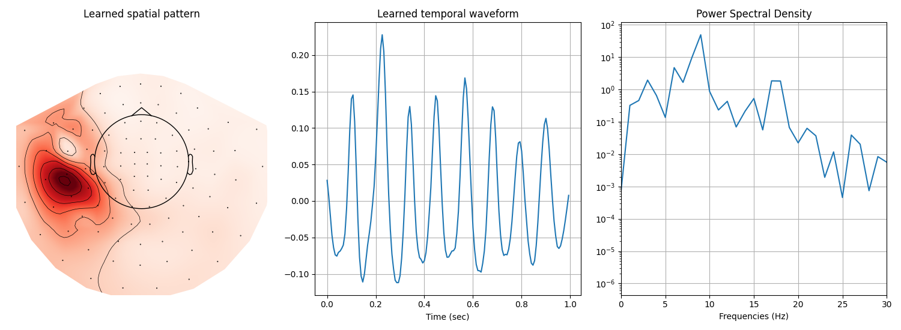

Note
Go to the end to download the full example code.
Extracting \(\mu\)-wave from the somato-sensory dataset#
This example illustrates how to learn rank-1 atoms [1] on the multivariate
somato-sensorymotor dataset from mne. The displayed results highlight
the presence of \(\mu\)-waves located in the SI cortex.
# Authors: Thomas Moreau <thomas.moreau@inria.fr>
# Mainak Jas <mainak.jas@telecom-paristech.fr>
# Tom Dupre La Tour <tom.duprelatour@telecom-paristech.fr>
# Alexandre Gramfort <alexandre.gramfort@telecom-paristech.fr>
#
# License: BSD (3-clause)
Let us first define the parameters of our model.
sfreq = 150.
# Define the shape of the dictionary
n_atoms = 25
n_times_atom = int(round(sfreq * 1.0)) # 1000. ms
Next, we define the parameters for multivariate CSC
from alphacsc import BatchCDL
cdl = BatchCDL(
# Shape of the dictionary
n_atoms=n_atoms,
n_times_atom=n_times_atom,
# Request a rank1 dictionary with unit norm temporal and spatial maps
rank1=True, uv_constraint='separate',
# Initialize the dictionary with random chunk from the data
D_init='chunk',
# rescale the regularization parameter to be 20% of lambda_max
lmbd_max="scaled", reg=.2,
# Number of iteration for the alternate minimization and cvg threshold
n_iter=100, eps=1e-4,
# solver for the z-step
solver_z="lgcd", solver_z_kwargs={'tol': 1e-2, 'max_iter': 1000},
# solver for the d-step
solver_d='alternate_adaptive', solver_d_kwargs={'max_iter': 300},
# Technical parameters
verbose=1, random_state=0, n_jobs=6)
Here, we load the data from the somato-sensory dataset and preprocess them in epochs. The epochs are selected around the stim, starting 2 seconds before and finishing 4 seconds after.
Using default location ~/mne_data for somato...
Fetching 1 file for the somato dataset ...
0%| | 0.00/610M [00:00<?, ?B/s]
0%| | 146k/610M [00:00<07:37, 1.33MB/s]
0%| | 1.53M/610M [00:00<01:12, 8.40MB/s]
2%|▌ | 9.28M/610M [00:00<00:15, 39.3MB/s]
3%|█ | 17.3M/610M [00:00<00:10, 55.2MB/s]
4%|█▌ | 25.6M/610M [00:00<00:08, 65.2MB/s]
6%|██ | 33.9M/610M [00:00<00:08, 71.2MB/s]
7%|██▋ | 42.2M/610M [00:00<00:07, 74.9MB/s]
8%|███▏ | 50.5M/610M [00:00<00:07, 77.4MB/s]
10%|███▋ | 58.8M/610M [00:00<00:06, 79.2MB/s]
11%|████▏ | 67.2M/610M [00:01<00:06, 80.8MB/s]
12%|████▋ | 75.5M/610M [00:01<00:06, 81.4MB/s]
14%|█████▏ | 83.8M/610M [00:01<00:06, 82.0MB/s]
15%|█████▋ | 92.2M/610M [00:01<00:06, 82.5MB/s]
16%|██████▍ | 101M/610M [00:01<00:06, 82.7MB/s]
18%|██████▉ | 109M/610M [00:01<00:06, 82.9MB/s]
19%|███████▍ | 117M/610M [00:01<00:05, 83.1MB/s]
21%|████████ | 126M/610M [00:01<00:05, 82.9MB/s]
22%|████████▌ | 134M/610M [00:01<00:05, 83.1MB/s]
23%|█████████ | 142M/610M [00:01<00:05, 83.1MB/s]
25%|█████████▌ | 151M/610M [00:02<00:05, 82.8MB/s]
26%|██████████▏ | 159M/610M [00:02<00:05, 83.1MB/s]
27%|██████████▋ | 167M/610M [00:02<00:05, 83.1MB/s]
29%|███████████▏ | 175M/610M [00:02<00:05, 83.1MB/s]
30%|███████████▊ | 184M/610M [00:02<00:05, 83.2MB/s]
32%|████████████▎ | 192M/610M [00:02<00:05, 83.3MB/s]
33%|████████████▊ | 201M/610M [00:02<00:04, 83.0MB/s]
34%|█████████████▎ | 209M/610M [00:02<00:04, 82.9MB/s]
36%|█████████████▉ | 217M/610M [00:02<00:04, 83.0MB/s]
37%|██████████████▍ | 226M/610M [00:02<00:04, 83.1MB/s]
38%|██████████████▉ | 234M/610M [00:03<00:04, 83.3MB/s]
40%|███████████████▍ | 242M/610M [00:03<00:04, 83.3MB/s]
41%|████████████████ | 251M/610M [00:03<00:04, 83.3MB/s]
42%|████████████████▌ | 259M/610M [00:03<00:04, 83.4MB/s]
44%|█████████████████ | 267M/610M [00:03<00:04, 83.6MB/s]
45%|█████████████████▋ | 276M/610M [00:03<00:03, 83.8MB/s]
47%|██████████████████▏ | 284M/610M [00:03<00:03, 83.8MB/s]
48%|██████████████████▋ | 292M/610M [00:03<00:03, 83.7MB/s]
49%|███████████████████▏ | 301M/610M [00:03<00:03, 83.9MB/s]
51%|███████████████████▊ | 309M/610M [00:03<00:03, 84.0MB/s]
52%|████████████████████▎ | 318M/610M [00:04<00:03, 83.4MB/s]
53%|████████████████████▊ | 326M/610M [00:04<00:03, 83.7MB/s]
55%|█████████████████████▍ | 335M/610M [00:04<00:03, 83.7MB/s]
56%|█████████████████████▉ | 343M/610M [00:04<00:03, 84.0MB/s]
58%|██████████████████████▍ | 351M/610M [00:04<00:03, 84.0MB/s]
59%|███████████████████████ | 360M/610M [00:04<00:02, 84.0MB/s]
60%|███████████████████████▌ | 368M/610M [00:04<00:02, 83.9MB/s]
62%|████████████████████████ | 377M/610M [00:04<00:02, 83.7MB/s]
63%|████████████████████████▌ | 385M/610M [00:04<00:02, 83.9MB/s]
64%|█████████████████████████▏ | 393M/610M [00:04<00:02, 83.9MB/s]
66%|█████████████████████████▋ | 402M/610M [00:05<00:02, 84.1MB/s]
67%|██████████████████████████▏ | 410M/610M [00:05<00:02, 83.8MB/s]
69%|██████████████████████████▊ | 419M/610M [00:05<00:02, 83.9MB/s]
70%|███████████████████████████▎ | 427M/610M [00:05<00:02, 84.0MB/s]
71%|███████████████████████████▊ | 436M/610M [00:05<00:02, 84.1MB/s]
73%|████████████████████████████▍ | 444M/610M [00:05<00:01, 84.0MB/s]
74%|████████████████████████████▉ | 452M/610M [00:05<00:01, 84.1MB/s]
76%|█████████████████████████████▍ | 461M/610M [00:05<00:01, 84.1MB/s]
77%|█████████████████████████████▉ | 469M/610M [00:05<00:01, 84.1MB/s]
78%|██████████████████████████████▌ | 478M/610M [00:05<00:01, 84.0MB/s]
80%|███████████████████████████████ | 486M/610M [00:06<00:01, 84.0MB/s]
81%|███████████████████████████████▌ | 494M/610M [00:06<00:01, 83.9MB/s]
82%|████████████████████████████████▏ | 503M/610M [00:06<00:01, 84.0MB/s]
84%|████████████████████████████████▋ | 511M/610M [00:06<00:01, 84.0MB/s]
85%|█████████████████████████████████▏ | 520M/610M [00:06<00:01, 83.9MB/s]
87%|█████████████████████████████████▊ | 528M/610M [00:06<00:00, 84.0MB/s]
88%|██████████████████████████████████▎ | 537M/610M [00:06<00:00, 83.8MB/s]
89%|██████████████████████████████████▊ | 545M/610M [00:06<00:00, 83.9MB/s]
91%|███████████████████████████████████▎ | 553M/610M [00:06<00:00, 83.8MB/s]
92%|███████████████████████████████████▉ | 562M/610M [00:06<00:00, 83.6MB/s]
93%|████████████████████████████████████▍ | 570M/610M [00:07<00:00, 83.7MB/s]
95%|████████████████████████████████████▉ | 578M/610M [00:07<00:00, 83.8MB/s]
96%|█████████████████████████████████████▌ | 587M/610M [00:07<00:00, 83.8MB/s]
98%|██████████████████████████████████████ | 595M/610M [00:07<00:00, 83.5MB/s]
99%|██████████████████████████████████████▌| 604M/610M [00:07<00:00, 83.5MB/s]
0%| | 0.00/610M [00:00<?, ?B/s]
100%|███████████████████████████████████████| 610M/610M [00:00<00:00, 2.80TB/s]
Attempting to create new mne-python configuration file:
/github/home/.mne/mne-python.json
Could not read the /github/home/.mne/mne-python.json json file during the writing. Assuming it is empty. Got: Expecting value: line 1 column 1 (char 0)
Download complete in 17s (581.8 MB)
Opening raw data file /github/home/mne_data/MNE-somato-data/sub-01/meg/sub-01_task-somato_meg.fif...
Range : 237600 ... 506999 = 791.189 ... 1688.266 secs
Ready.
Reading 0 ... 269399 = 0.000 ... 897.077 secs...
Filtering raw data in 1 contiguous segment
Setting up band-stop filter
FIR filter parameters
---------------------
Designing a one-pass, zero-phase, non-causal bandstop filter:
- Windowed time-domain design (firwin) method
- Hamming window with 0.0194 passband ripple and 53 dB stopband attenuation
- Lower transition bandwidth: 0.50 Hz
- Upper transition bandwidth: 0.50 Hz
- Filter length: 1983 samples (6.603 s)
Filtering raw data in 1 contiguous segment
Setting up high-pass filter at 2 Hz
FIR filter parameters
---------------------
Designing a one-pass, zero-phase, non-causal highpass filter:
- Windowed time-domain design (firwin) method
- Hamming window with 0.0194 passband ripple and 53 dB stopband attenuation
- Lower passband edge: 2.00
- Lower transition bandwidth: 2.00 Hz (-6 dB cutoff frequency: 1.00 Hz)
- Filter length: 497 samples (1.655 s)
Finding events on: STI 014
111 events found on stim channel STI 014
Event IDs: [1]
Not setting metadata
111 matching events found
Setting baseline interval to [-3.9992341833870637, 0.0] s
Applying baseline correction (mode: mean)
0 projection items activated
Using data from preloaded Raw for 111 events and 1202 original time points ...
Rejecting epoch based on EOG : ['EOG 061']
Rejecting epoch based on EOG : ['EOG 061']
Rejecting epoch based on EOG : ['EOG 061']
Rejecting epoch based on EOG : ['EOG 061']
Rejecting epoch based on EOG : ['EOG 061']
5 bad epochs dropped
NOTE: pick_types() is a legacy function. New code should use inst.pick(...).
/usr/local/lib/python3.13/contextlib.py:85: RuntimeWarning: Something went wrong in the data-driven estimation of the data rank as it exceeds the theoretical rank from the info (204 > 64). Consider setting rank to "auto" or setting it explicitly as an integer.
return func(*args, **kwds)
Reducing data rank from 204 -> 204
Estimating covariance using EMPIRICAL
Done.
Number of samples used : 127412
[done]
Not setting metadata
111 matching events found
Setting baseline interval to [-2.001282051803185, 0.0] s
Applying baseline correction (mode: mean)
0 projection items activated
Using data from preloaded Raw for 111 events and 1803 original time points ...
Rejecting epoch based on EOG : ['EOG 061']
Rejecting epoch based on EOG : ['EOG 061']
Rejecting epoch based on EOG : ['EOG 061']
Rejecting epoch based on EOG : ['EOG 061']
Rejecting epoch based on EOG : ['EOG 061']
Rejecting epoch based on EOG : ['EOG 061']
Rejecting epoch based on EOG : ['EOG 061']
Rejecting epoch based on EOG : ['EOG 061']
8 bad epochs dropped
NOTE: pick_types() is a legacy function. New code should use inst.pick(...).
Fit the model and learn rank1 atoms
..............
[BatchCDL] Fit in 420.8s
<alphacsc.convolutional_dictionary_learning.BatchCDL object at 0x7fc4d0ae16d0>
Display the 4-th atom, which displays a \(\mu\)-waveform in its temporal pattern.
import mne
import numpy as np
import matplotlib.pyplot as plt
i_atom = 4
n_plots = 3
figsize = (n_plots * 5, 5.5)
fig, axes = plt.subplots(1, n_plots, figsize=figsize, squeeze=False)
# Plot the spatial map of the learn atom using mne topomap
ax = axes[0, 0]
u_hat = cdl.u_hat_[i_atom]
mne.viz.plot_topomap(u_hat, info, axes=ax, show=False)
ax.set(title='Learned spatial pattern')
# Plot the temporal pattern of the learn atom
ax = axes[0, 1]
v_hat = cdl.v_hat_[i_atom]
t = np.arange(v_hat.size) / sfreq
ax.plot(t, v_hat)
ax.set(xlabel='Time (sec)', title='Learned temporal waveform')
ax.grid(True)
# Plot the psd of the time atom
ax = axes[0, 2]
psd = np.abs(np.fft.rfft(v_hat)) ** 2
frequencies = np.linspace(0, sfreq / 2.0, len(psd))
ax.semilogy(frequencies, psd)
ax.set(xlabel='Frequencies (Hz)', title='Power Spectral Density')
ax.grid(True)
ax.set_xlim(0, 30)
plt.tight_layout()
plt.show()

Total running time of the script: (7 minutes 27.884 seconds)